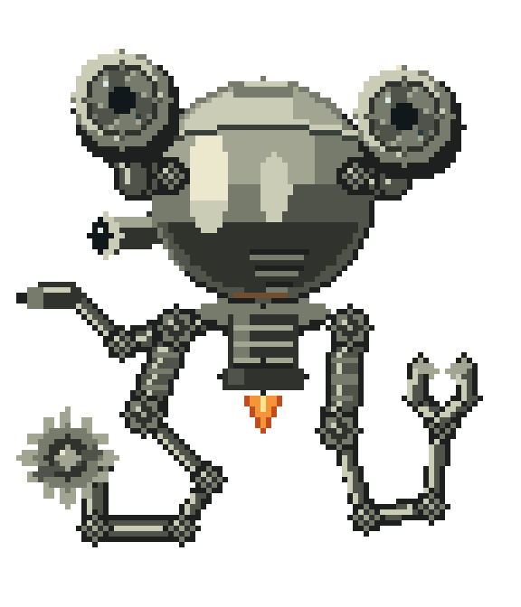
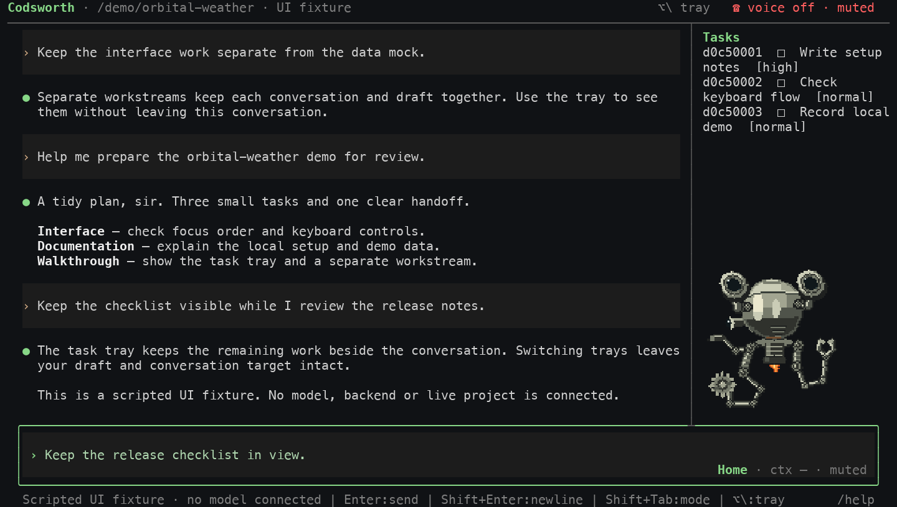

Eric Benson / Interface lab
Codsworth.
A terminal companion with expressive motion, streaming conversations, and a keyboard-first workspace. Explore the real visual components below.
Source on GitHub
Expressions
Five moods. Four activities. Transitions with real movement.
Conversation
Replies, gestures, interruption, and optional local audio.
Screen interactions
A character that reaches for and moves interface elements.
Local demos use scripted events. No model connection or audio upload. The native terminal requires a separately configured gateway.
